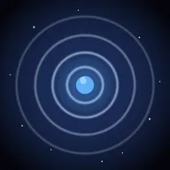
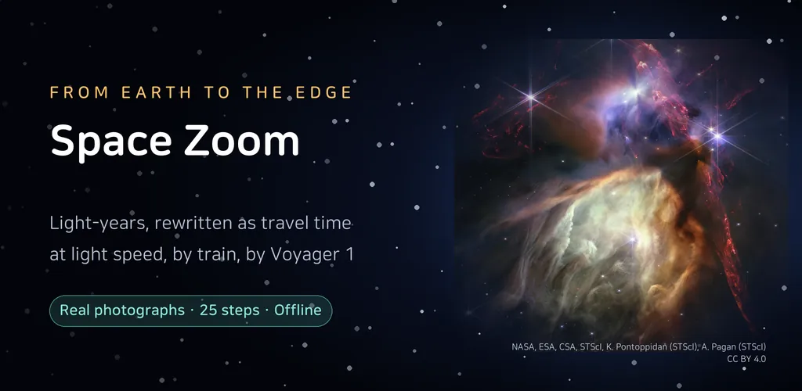
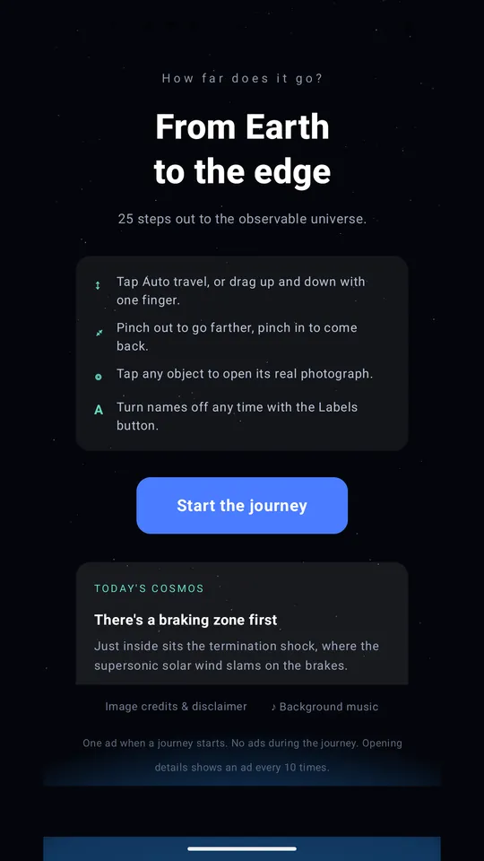
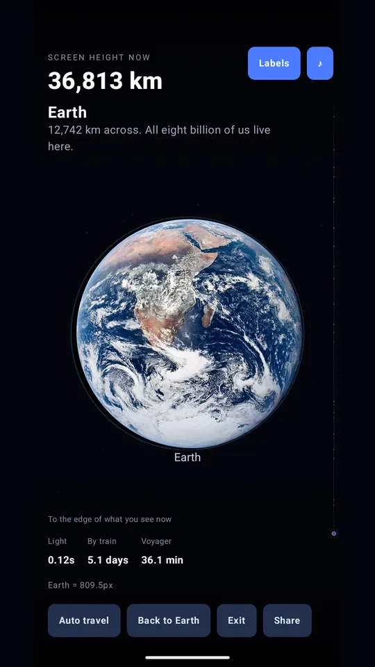
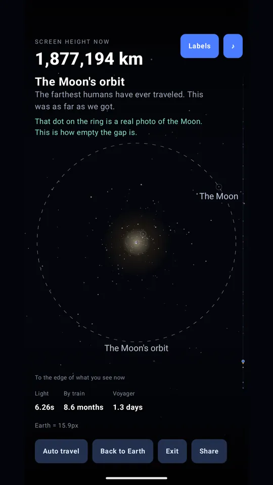
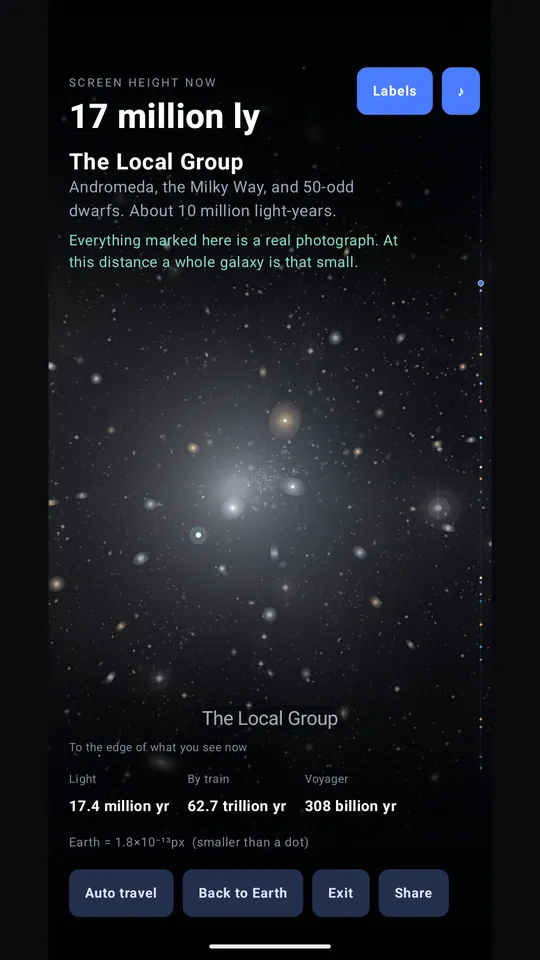
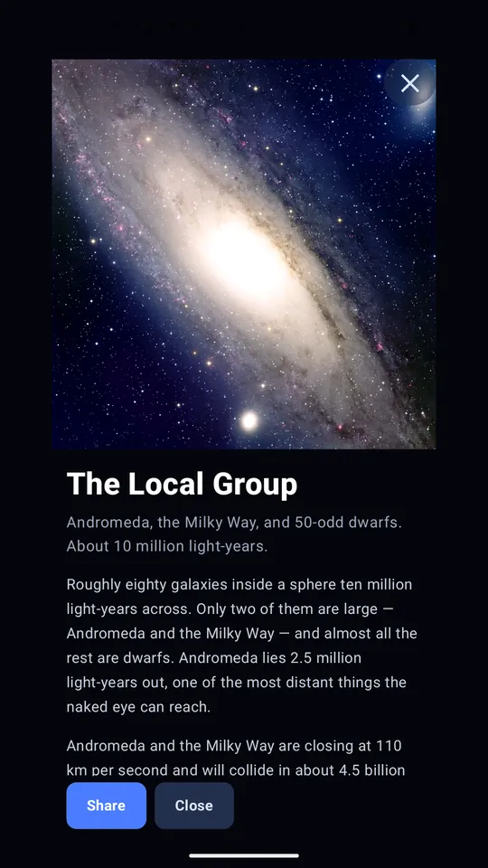
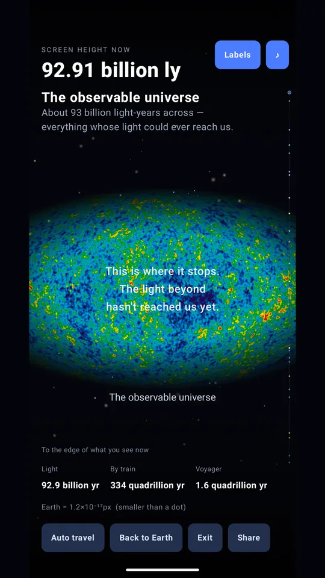

How Far Is Space - Space Zoom
Pinch out from Earth to the cosmic web and feel light-years as travel time.







About this app
Spread two fingers on Earth and the screen pulls away. Past the Moon's orbit, the Sun, Neptune's orbit, the Oort Cloud, the nearest star, the Milky Way and the Local Group, all the way out to the cosmic web. Twenty-five steps, ending at the edge of the observable universe.
Light-years, translated into time
"4.24 light-years" means nothing to anyone. So every distance is also written as time: years at the speed of light, years by high-speed train, years at Voyager 1's speed. The app also keeps telling you how many pixels wide Earth is right now. At some point it slips below a single pixel.
Real photographs
Earth, the Moon, the Sun, nebulae and galaxies are all real observations released by NASA, ESO and others. No photograph of the Milky Way from outside can exist, so the app shows NGC 6744, the galaxy that looks most like ours, and says so on screen. From the supercluster scale upward it uses DESI's map of 47 million measured galaxy positions. Not an artist's impression.
Tap to read
Tap an object and its photograph opens with something to read: how we measure the Moon drifting 3.8 cm farther each year, how Neptune was found by arithmetic before anyone saw it, why a 13.8 billion year old universe spans 93 billion light-years.
The limits of observation, written down
There are barely a dozen stars within ten light-years, and only one of them has a photograph worth showing. Dozens of satellite galaxies orbit the Milky Way, and only two can be seen. The app says so instead of hiding it, because the missing pictures are themselves the point: space is that empty and that dark.
One piece of the universe, nightly
A short cosmic fact once a day. Tap it and you land on the step where that story happens.
Share
Turn what you are looking at into a card, with how far you went and how long light needs to cross it.
Works with no internet connection. Every photograph and number is bundled in the app, so it uses no data. The internet permission is only used to show ads.
One ad when a journey starts; opening details shows an ad every 10 times. There are no ads while you travel.
This app uses publicly available imagery and data from NASA, ESO, ESA and others. This app is not affiliated with, endorsed, or sponsored by these organizations. Every image is credited with its source and licence inside the app.
Android · free with ads · Developer: RealTunaLove · Store listing in 17 languages
Background story: why I built it